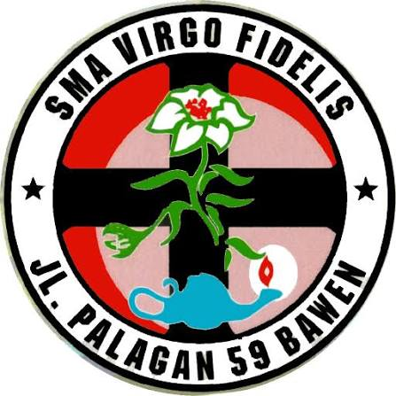

Senior High
SMA Virgo Fidelis Bawen
Bawen, Jawa Tengah | Ilmu Pengetahuan Sosial

Fondasi Logika & Analitis
Di SMA Virgo Fidelis Bawen, saya tidak hanya mempelajari ilmu akademis formal, tetapi juga melatih cara berpikir kritis, observasi sosial, dan pemecahan masalah (problem-solving) yang adaptif. Masa ini adalah transisi krusial di mana saya mulai membentuk kedisiplinan belajar mandiri yang menjadi modal utama dalam mendalami ilmu rekayasa perangkat lunak saat ini.
Pengalaman & Pengembangan Diri
- Kolaborasi Tim: Terbiasa bekerja sama dalam proyek kelompok yang melatih keterampilan komunikasi dan manajemen tugas.
- Pemikiran Struktural: Mempelajari pola kausalitas dalam ilmu sosial yang ternyata sangat berguna dalam memetakan logika alur sistem (system flow) di dunia pemrograman.
- Aktivitas Ekstrakurikuler: Membangun rasa tanggung jawab, empati, serta kepekaan terhadap lingkungan sekitar.